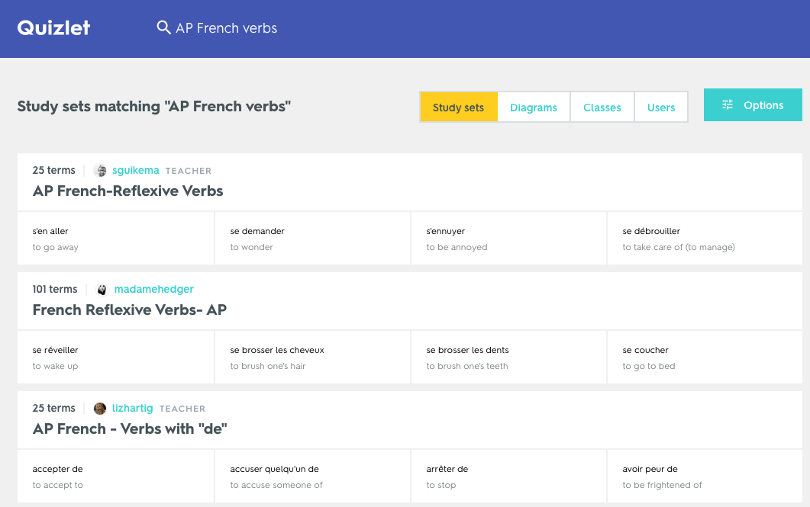

Anyone can use Quizlet to study and learn content created by other users, or to create your own custom study sets. You can also share sets with friends, classmates or your students.
The best way to get started on Quizlet as a student or a teacher is to search for sets made by other Quizlet users. Students and teachers create new study sets all the time, so it's quite likely that you'll be able to find what you're looking for.
To find study sets, select the magnifying glass icon at the top of any page on Quizlet. Then, type in your subject or the name of the exam you're studying for and press Enter to see a list of results.
You'll see a preview of the first four terms in each set on the search results page. To see the full set, select the title to view all terms and definitions on the set page. You can also open the Options menu to sort search results by relevancy or creation date. 
If you're looking to study something very specific, or would like to share content you create with a group of classmates or students, you may want to create your own sets rather than study those made by others. In order to create sets, you'll first need to sign up for an account.
You can create sets with text, add images (users with free Quizlet accounts can add images from our gallery; upgraded users can choose from our gallery or upload their own) or create a diagram set.
Quizlet for teachers